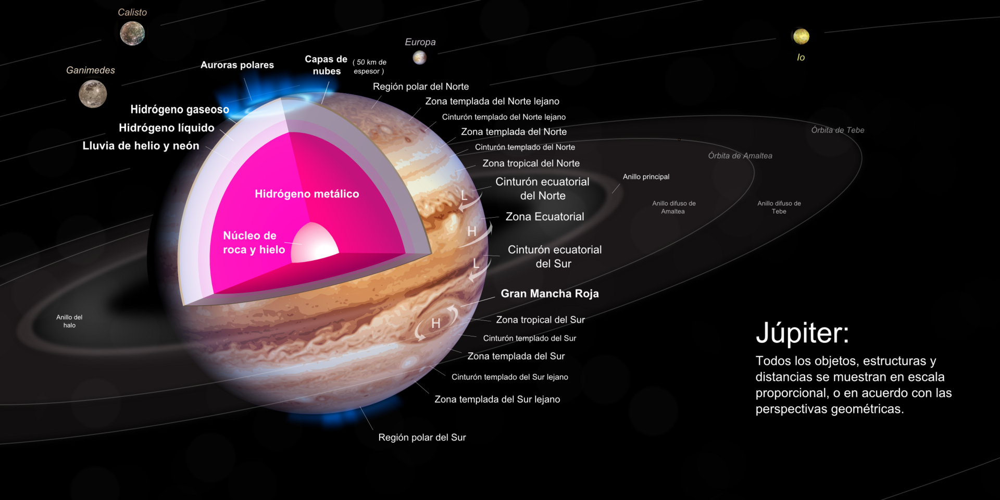
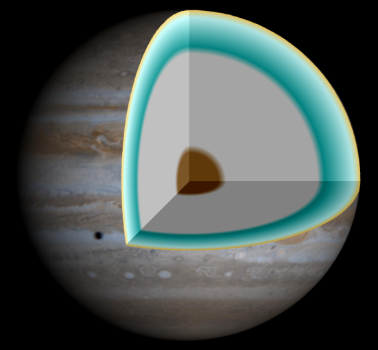

Júpiter es el planeta más grande del sistema solar y el quinto en orden de lejanía al Sol.[3] Es un gigante gaseoso que forma parte de los denominados planetas exteriores. Recibe su nombre del dios romano Júpiter y los antiguos griegos le daban el nombre Fenonte.[4] Es uno de los objetos naturales más brillantes en un cielo nocturno despejado, superado solo por la Luna, Venus y algunas veces Marte.[
Se trata del planeta que ofrece un mayor brillo a lo largo del año dependiendo de su fase. Es, además, después del Sol, el mayor cuerpo celeste del sistema solar, con una masa casi dos veces y media de la de los demás planetas juntos (con una masa 318 veces mayor que la de la Tierra y tres veces mayor que la de Saturno, además de ser, en cuanto a volumen, 1321 veces más grande que la Tierra). También es el planeta más antiguo del sistema solar, siendo incluso más antiguo que el Sol; este descubrimiento fue realizado por investigadores de la universidad de Münster en Alemania.[
Júpiter es un cuerpo masivo gaseoso, formado principalmente por hidrógeno y helio, carente de una superficie interior definida. Entre los detalles atmosféricos es notable la Gran Mancha Roja (un enorme anticiclón situado en las latitudes tropicales del hemisferio sur), la estructura de nubes en bandas oscuras y zonas brillantes, y la dinámica atmosférica global determinada por intensos vientos zonales alternantes en latitud y con velocidades de hasta 140 m/s (504 km/h).
Características principales

Júpiter es el planeta con mayor masa del sistema solar: equivale a unas 2.48 veces la suma de las masas de todos los demás planetas juntos. A pesar de ello, no es el planeta más masivo que se conoce: más de un centenar de planetas extrasolares que han sido descubiertos tienen masas similares o superiores a la de Júpiter.[10][11] Júpiter también posee la velocidad de rotación más rápida de los planetas del sistema solar: gira en poco menos de diez horas sobre su eje. Esta velocidad de rotación se deduce a partir de las medidas del campo magnético del planeta. La atmósfera se encuentra dividida en regiones con fuertes vientos zonales con periodos de rotación que van desde las 9 h 50 min 30 s, en la zona ecuatorial, a las 9 h 55 min 40 s en el resto del planeta.
El planeta es conocido por una enorme formación meteorológica, la Gran Mancha Roja, fácilmente visible por astrónomos aficionados dado su gran tamaño, superior al de la Tierra. Su atmósfera está permanentemente cubierta de nubes que permiten trazar la dinámica atmosférica y muestran un alto grado de turbulencia.
Tomando como referencia la distancia al Sol, Júpiter es el quinto planeta del sistema solar. Su órbita se sitúa aproximadamente a 5 unidades astronómicas (au), unos 750 000 000 (setecientos cincuenta millones) de kilómetros del Sol.
Masa
La masa de Júpiter es tal que su baricentro con el Sol se sitúa en realidad casi 100 000 km por encima de la superficie del Sol (un 7 % del radio solar).[12]
A pesar de ser mucho más grande que la Tierra (con un diámetro 11 veces mayor), es considerablemente menos denso. El volumen de Júpiter es equivalente al de 1321 tierras, pero su masa es solamente 318 veces mayor que la Tierra. La unidad de masa de Júpiter (Mj) se utiliza para medir masas de otros planetas gaseosos, sobre todo planetas extrasolares y enanas marrones.
La enana roja más pequeña que se conoce tiene solo un 30 % más de radio que Júpiter, aunque tiene cientos de veces su masa. Si bien el planeta necesitaría tener unas quince veces su masa para provocar las reacciones de fusión de ²H (deuterio) para convertirse en una enana marrón, Júpiter irradia más calor del que recibe de la escasa luz solar que le llega. La diferencia de calor liberada se genera por la inestabilidad Kelvin-Helmholtz mediante contracción adiabática (encogimiento).[13] La consecuencia de este proceso es una paulatina y lenta reducción de su diámetro en unos dos centímetros cada año.[14] Según esta teoría, tras su formación, Júpiter era mucho más caliente y presentaba casi el doble de su actual diámetro.
Atmósfera

La atmósfera de Júpiter no presenta una frontera clara con el interior líquido del planeta; la transición se va produciendo de una manera gradual.[16] Se compone en su mayoría de hidrógeno (87 %) y helio (13 %), además de contener metano, vapor de agua, amoníaco y sulfuro de hidrógeno, todas estas con < 0.1 % de la composición de la atmósfera total.
Bandas y zonas:
El astrónomo aficionado inglés A.S. Williams hizo el primer estudio sistemático sobre la atmósfera de Júpiter en 1896. La atmósfera de Júpiter está dividida en cinturones oscuros llamados bandas y regiones claras llamadas zonas, todos ellos alineados en la dirección de los paralelos. Las bandas y zonas delimitan un sistema de corrientes de viento alternantes en dirección con la latitud y en general de gran intensidad; por ejemplo, los vientos en el ecuador soplan a velocidades en torno a 100 m/s (360 km/h). En la Banda Ecuatorial Norte, los vientos pueden llegar a soplar a 140 m/s (500 km/h). La rápida rotación del planeta (9 h 55 min 30 s) hace que las fuerzas de Coriolis sean muy intensas, siendo determinantes en la dinámica atmosférica del planeta.
La Gran Mancha Roja:
El científico inglés Robert Hooke observó en 1664 una gran formación meteorológica que podría ser la Gran Mancha Roja (conocida en inglés por las siglas GRS, del Great Red Stain).[19] Sin embargo, no parecen existir informes posteriores de la observación de tal fenómeno hasta el siglo XX. En todo caso, varía mucho tanto de color como de intensidad. Las imágenes obtenidas por el Observatorio Yerkes a finales del siglo XIX muestran una mancha roja alargada, ocupando el mismo rango de latitudes, pero con el doble de extensión longitudinal. A veces, es de un color rojo fuerte, y realmente muy notable, y en otras ocasiones palidece hasta hacerse insignificante. Históricamente, en un principio se pensó que la Gran Mancha Roja era la cima de una montaña gigantesca o una meseta que salía por encima de las nubes. Esta idea fue, sin embargo, desechada en el siglo XIX al constatarse espectroscópicamente la composición de hidrógeno y helio de la atmósfera y determinarse que se trataba de un planeta fluido. El tamaño actual de la Gran Mancha Roja es aproximadamente unas dos veces y media el de la Tierra. Meteorológicamente, la Gran Mancha Roja es un enorme anticiclón muy estable en el tiempo. Los vientos en la periferia del vórtice tienen una velocidad cercana a los 400 km/h.